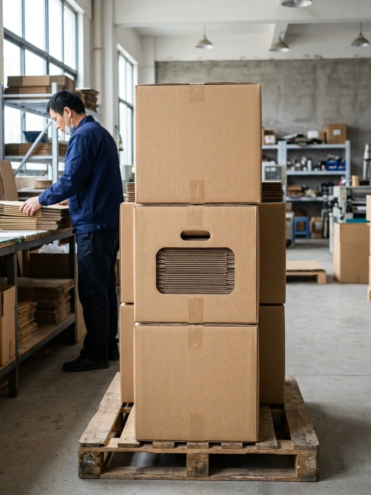

Dasen PackagingYour Trusted Packaging Business Partner
Corrugated packaging for produce, seafood, meat, processed food, retail goods, and other projects where outer-carton performance is critical.
Corrugated packaging is selected for its stacking strength, transport protection, moisture resistance, and reliable outer-carton performance.
We support custom corrugated structures, board selection, and repeat production for diverse packaging projects.

Board structure is tailored to load, protection, and handling requirements, rather than default specifications.
A flute, B flute, C flute, E flute, and F flute options for lighter-duty or retail-support uses.
AB flute, BC flute, BE flute, and other combined boards for stronger stacking and transport needs.
7-layer corrugated board for projects needing more structural strength in packing or movement.
Die-cut corrugated cartons, shelf-ready outers, protective inserts, and other application-specific formats.
These factors help refine board structure and carton specifications before sampling or quotation.
Expected weight, pallet stacking, and warehouse handling determine the initial board specifications.
Local delivery, export shipments, cold-chain handling, and repeated shipment cycles may require adjustments to carton structure.
Inner pack count, divider requirements, and product arrangement impact die-cut layout and outer-carton dimensions.
Some corrugated boxes remain plain for transport, while others require enhanced print presence for shelf-ready use.
.png)
We will review load requirements, stacking needs, board grade, die-cut layout, and packing conditions before specifications are finalized.